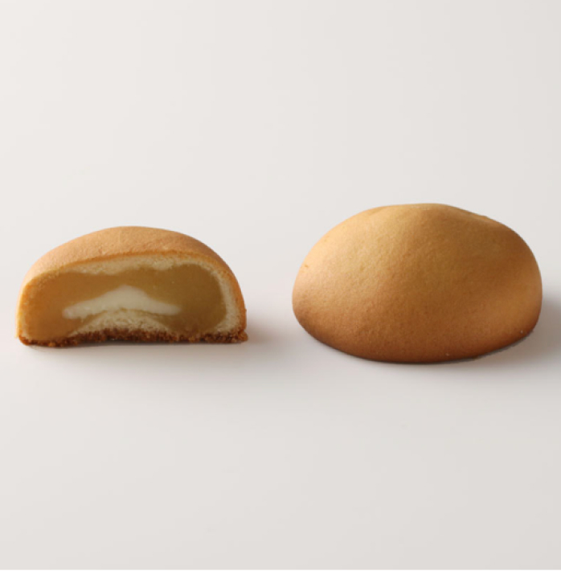

北九菓 2入
NT$120
鬆軟的麵包體搭配可口的黃豆餡，香氣伴著綿滑滋味，溫潤地在味蕾縈繞。 單筆4入現折30元，欲選購綜合口味可至綜合賣場
規格說明
北九菓:: 牛乳、海藻膠(寒天)、黑芝麻粉、麥芽糖醇、異麥芽寡糖(代糖)、鮮奶油、香草粉(香草香料.二氧化矽.葡萄糖.阿拉伯膠.麥芽糊精)。
運送方式
此商品僅提供台灣本島配送服務，產品金額已包含運費，完成付款後會儘速使用黑貓冷藏物流寄出，送禮高峰期間配送天數可能延長。
保存期限
北九菓杯⾝標示有效期限是指全程冷藏於2~5°C的保存天數，由於外帶或配送過程中可能發生失溫，實際保存期限可能因個別保存條件而有所不同。標示日期僅供參考，為確保最佳品質，請於收到商品後5日內食用完畢。
我們皆於每批產品出貨前進行留樣檢測，並提示最佳賞味期限。若單一個案產品在接近標示效期的3日內出現變質情況，恕無法受理完整補償。
貼心提醒
mochi mochi重視每一位消費者的需求與產品品質。
由於北九菓屬於易碎且易腐壞的商品，我們已採取完善的保護措施以降低配送風險，並於充足預冷後出貨。但宅配仍有一定風險，如您收到商品後發現外盒受損、醬汁外漏、布丁碎裂或提前變質等情況，這些可能是物流過程中的碰撞或失溫所造成的。當您下單時，即表示您已了解相關保存須知，並願意承擔宅配風險與配合相關事宜。
烤布丁系列因其製作工藝，質地細膩綿密，我們不建議倒扣食用，若因倒扣導致布丁碎裂，恕無法提供退換貨服務。
退換貨須知
北九菓屬低溫保鮮食品，故不適用於消保法規之7日鑑賞期，售出後恕不接受退換貨。
若您在收到商品後發現任何問題或瑕疵，請務必立即拍照並將商品低溫保存，儘快於2日內與我們聯繫。